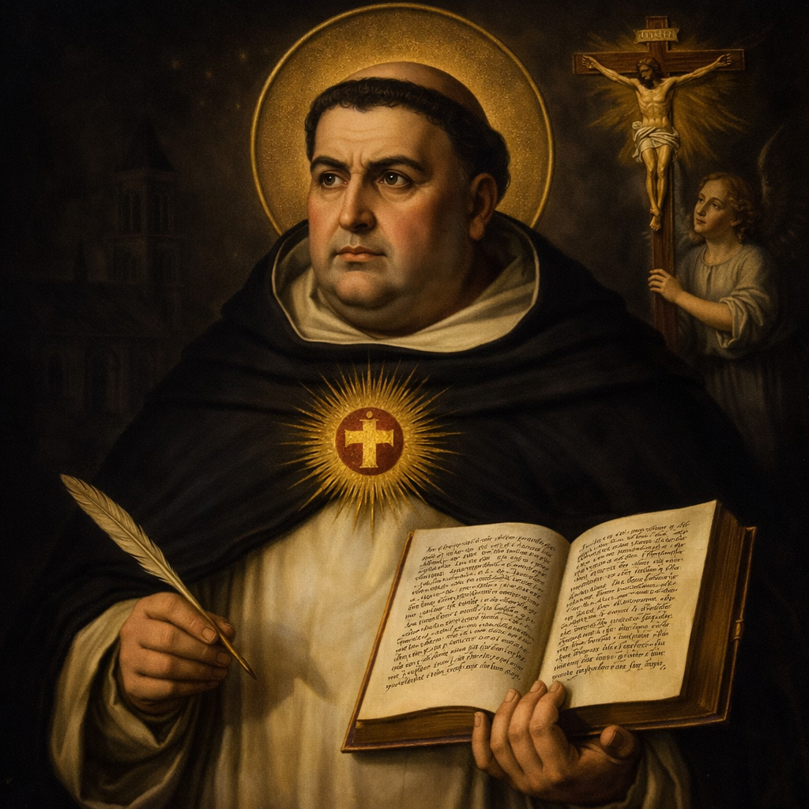

Paróquia São José
“Mirabilis Deus in sanctis suis.”
Semana a semana
A cada semana nos aproximamos de um servo de Deus que viveu radicalmente o Evangelho. Que o seu exemplo de fé, esperança e caridade nos inspire, e as suas orações nos acompanhem ao longo desta jornada de Iniciação Cristã.

Festa: 28 de Janeiro
Doutor Angélico · Patrono dos Estudantes e Teólogos
Nascido em 1225 no castelo de Roccasecca, na Itália, Tomás pertencia a uma família nobre. Contra a vontade dos familiares, entrou jovem na Ordem dos Pregadores — os Dominicanos — seguindo o chamado de Deus com coragem e determinação.
Discípulo de São Alberto Magno em Colônia e Paris, tornou-se o maior teólogo da história da Igreja. Sua obra monumental, a Summa Theologiae, harmoniza fé e razão de modo que ainda hoje orienta a reflexão católica, pois acreditava que toda verdade, onde quer que se encontre, pertence ao Espírito Santo.
Era um homem de oração profunda. Conta-se que, orando diante do crucifixo, Cristo lhe disse: "Escreveste bem sobre Mim, Tomás. Que recompensa desejas?" E ele respondeu: "Nenhuma outra senão a Ti mesmo, Senhor." Morreu em 1274 e foi canonizado em 1323. É Doutor da Igreja.
"A fé tem por objeto a verdade primeira; a inteligência é o seu instrumento, e o amor, a sua razão de ser."
— Santo Tomás de Aquino, Summa Theologiae
📅 Próximas semanas
Semana 2 ·
Semana 3 · Em breve
Semana 4 · Em breve
Semana 5 · Em breve
Semana 6 · Em breve
Semana 7 · Em breve